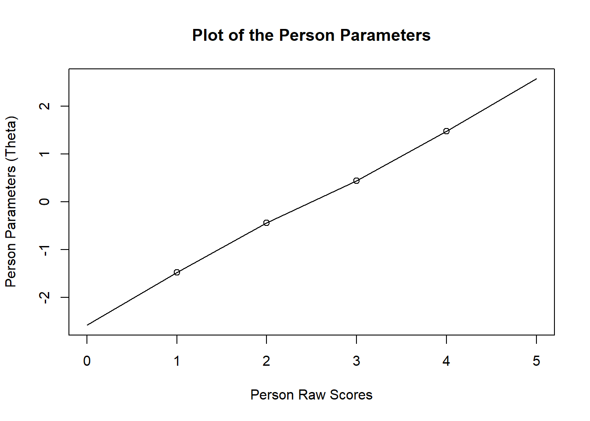
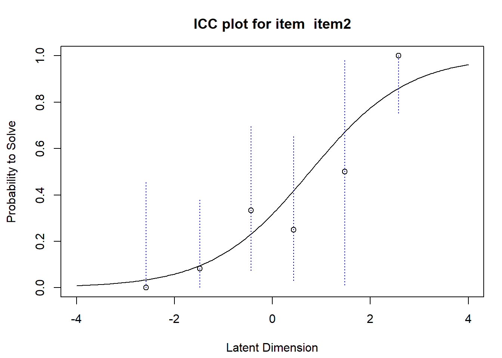

Hello everyone, and welcome back to my blog. Today I would like to resume a topic that I promised myself I will study more but which I kind of left alone for quite some time now. I initially introduced the topic a few months ago in another post, using a primary reference the book of Jean-Paul Fox called Bayesian Item Response Modelling. With this post I would like to take over from where I left and continue talking a bit about Item Response Theory (IRT).
Last time I focussed on IRT models, I introduced the simplest type of model for binary IRT response data, called the Rasch Model or one-parameter logistic response model, in which the probability of a correct response is given by:
for individual \(i\) with ability level \(\theta_i\) and item \(k\) with item-difficulty parameter \(b_k\). Now, let’s try to simulate some data according to the Rasch model.
Let’s start by considering a simple questionnaire example formed by \(K=2\) dichotomous items, and for each of these the \(i\)-th respondent in the dataset may provide either a negative (e.g. wrong/failure) or positive (e.g. correct/success) response \(Y_{ik}=0\) or \(Y_{ik}=1\) according to some probability which in turn depends on some person-specific ability level \(\theta_i\) and item-specific difficulty level \(b_k\). We proceed as follows:
Simulate item difficulties \(b_k\) using a uniform distribution, i.e. \(b_k\sim \text{Uniform}(a_b,b_b)\) for \(k=1,K=2\).
Simulate the person abilities \(\theta_i\) using a normal distribution, i.e. \(\theta_i \sim \text{Normal}(\mu_{\theta},\sigma_{\theta})\) for \(i=1,\ldots,N=100\).
Use the generated values of \(\theta_i\) and \(b_k\) to obtain \(P(Y_{ik}=1 | \theta_i,b_k)\), i.e. the probability of giving the correct response for the \(i\)-th person on the \(k\)-th item using the Item Characteristic Curve (ICC) equation of the Rasch model.
set.seed(7689)K <-2b <-runif(K,-1,1) N <-10theta <-rnorm(N,0,2)temp <-matrix( rep( theta, length( b ) ) , ncol =length( b ) )p_resp <-matrix(NA, nrow = N, ncol = K)for(i in1:N){for(k in1:K){ p_resp[i,k] <- (exp(theta[i] - b[k])) / (1+exp(theta[i] - b[k])) }}obs_resp <-matrix( sapply( c(p_resp), rbinom, n =1, size =1), ncol =length(b) )#put everything into a functionsim_rasch <-function(N,K,a_b=-1,b_b=1,mu_theta=0,sigma_theta=2){b <-runif(K,a_b,b_b) theta <-rnorm(N,mu_theta,sigma_theta)temp <-matrix( rep( theta, length( b ) ) , ncol =length( b ) )p_resp <-matrix(NA, nrow = N, ncol = K)for(i in1:N){for(k in1:K){ p_resp[i,k] <- (exp(theta[i] - b[k])) / (1+exp(theta[i] - b[k])) }} obs_resp <-matrix( sapply( c(p_resp), rbinom, n =1, size =1), ncol =length(b) ) output <-list("y"=obs_resp, "p"=p_resp, "theta"=theta, "b"=b)return(output)}obs_resp
Now, let’s put everything we have done into a function so that we can customise the output as much as we like, for example considering a sample of \(N=25\) people who answer a set of \(K=5\) dichotomous items:
Ok cool, now that we simulated the data, let’s try to use one of the many R packages to fit a Rasch model to the data and see whether the model fits them as it should be. For this purpose, I will use the eRm package, specifically dedicated to the fitting and checking of Rasch models to the data. I refer to this webpage for a more in depth explanation of the package and its function, from which most of the stuff I will show is taken from.
#load packagelibrary(eRm)#fit model to simulated item responsesitems <- data_sim$yK <-ncol(items)N <-nrow(items)colnames(items) <-c(sprintf("item%01d", seq(1,K)))#fit the modelraschfit <-RM(items)
After fitting the model and saving the output in the object raschfit, we can inspect the coefficient estimates of the model both in terms of person and item-specific parameters:
Next, it may be useful to test some of the key assumptions of the Rasch model to see whether the model seems to be reasonable for the data at hand. Among the most popular test procedures that are available in in the package, we can consider the following:
Andersen’s conditional Likelihood Ratio Test.
It is a surprising result that we can take our items and then get the correct estimates of all the item parameters \(\boldsymbol b=(b_1,\ldots,b_K)\) in the any of these sub samples. This only work because we use conditional inference. It works if we divide the sample into two or more groups using any splitting criterion. We can do it in eRm:
gr <-cut(rowSums(items),breaks=c(0,2,5),include.lowest =TRUE)LRtest(raschfit, splitcr=gr)
Expected response matrix obtained from \(\pi_{ij}=\frac{\text{exp}(\hat{b}_k+\hat{\theta}_i)}{1+\text{exp}(\hat{b}_k+\hat{\theta}_i)}\), while residuals are defined as \(e_{ik}=y_{ik}-\pi_{ik}\). From these quantities, we can retrieve the two statistics: \(\text{INFIT}_k=w_k=\frac{1}{N}\frac{\sum_i e^2_{ik}}{\sum_i \nu_{ik}}\) and \(\text{OUTFIT}_k=u_k=\frac{1}{N}\sum_i \frac{e^2_{ik}}{\nu_{ik}}\), where \(\nu_{ik}=\pi_{ik}\times (1-\pi_{ik})\). The INFIT and OUTFIT item fit test statistics have expected value \(1\). Informal evaluation: \(0.7\) to \(1.3\) is fine (\(0.5\) to \(1.5\) is OK). The interpretation of the OUTFIT statistic is sensitive against outlying observations e.g. when a very able person gets an easy item wrong. To calculate in eRm we have to use the p.param object:
#use iarm package to shows p-values less than 0.05library(iarm)out_infit(raschfit)
Outfit se pvalue padj sig Infit se pvalue padj sig
item1 0.705 0.299 0.324 1 0.716 0.205 0.165 0.772
item2 1.137 0.38 0.718 1 1.124 0.244 0.611 1
item3 1.253 0.195 0.195 1 1.165 0.162 0.309 0.772
item4 1.155 0.206 0.452 1 1.174 0.167 0.298 0.772
item5 0.779 0.223 0.321 1 0.819 0.15 0.227 0.772
P value adjustment: BH
Item-total correlations and item-score correlations are routinely reported in classical test theory. We can use the simple structure in the Rasch model to compute the expected values of the item-score correlation:
fit<-RM(items)ppar <-person.parameter(raschfit)#one to one correspondence between y and thetaplot(ppar)

#we look at the item 2plotICC(fit,item.subset =c(2),empICC =list("raw"),empCI =list(gamma=0.95, col="blue"))

This plot shows the ICC for the selected item. The x-axis shows the ability continuum, the y-axis the response probability. The continuous line describes the probability to respond correctly to the problem given a level of ability. The difficulty of the item is where the probability of a correct response equals \(0.5\). The option empICC equal to “raw” also plots the relative frequencies of positive responses for each rawscore group at the position of the corresponding ability level. The blue dotted lines represent the \(95\%\) confidence level for the relative frequencies and are shown if options are provided if the optional argument empCI is specified.
tests for local dependence
Testing for local dependence can be done by removing an item, fitting the Rasch model to the remaining items, splitting with respect to the removed item. The general method for testing local dependence is to compute Yens \(Q_3\) statistic, which proceeds as follows. Estimate \(\boldsymbol b\) and \(\boldsymbol \theta\); compute the expected data matrix \(\boldsymbol E=E_{ik}=E(Y_{ik}\mid \theta_i=\hat{\theta}_i)=P(Y_{ik}=1\mid \theta_i=\hat{\theta}_i)\); compute the matrix of residuals \(\boldsymbol R=R_{ik}=\frac{Y_{ik} - E_{ik}}{\text{Var}(Y_{ik})}\); evaluate correlation between residuals. We use the sirt package for this
mod <- sirt::rasch.mml2(items)
------------------------------------------------------------
Semiparametric Marginal Maximum Likelihood Estimation
Raschtype Model with generalized logistic link function: alpha1= 0 , alpha2= 0
------------------------------------------------------------
...........................................................
Iteration 1 2024-07-22 15:35:17.027667
Deviance=302.8245
Maximum b parameter change=0.149448
...........................................................
Iteration 2 2024-07-22 15:35:17.029991
Deviance=299.1961 | Deviance change=3.628433
Maximum b parameter change=0.036572
...........................................................
Iteration 3 2024-07-22 15:35:17.030829
Deviance=296.505 | Deviance change=2.691082
Maximum b parameter change=0.036111
...........................................................
Iteration 4 2024-07-22 15:35:17.031601
Deviance=294.5184 | Deviance change=1.986675
Maximum b parameter change=0.034245
...........................................................
Iteration 5 2024-07-22 15:35:17.032313
Deviance=293.147 | Deviance change=1.371326
Maximum b parameter change=0.031046
...........................................................
Iteration 6 2024-07-22 15:35:17.03324
Deviance=292.2506 | Deviance change=0.896385
Maximum b parameter change=0.027082
...........................................................
Iteration 7 2024-07-22 15:35:17.034008
Deviance=291.6894 | Deviance change=0.561218
Maximum b parameter change=0.022895
...........................................................
Iteration 8 2024-07-22 15:35:17.034674
Deviance=291.3492 | Deviance change=0.340225
Maximum b parameter change=0.018872
...........................................................
Iteration 9 2024-07-22 15:35:17.035317
Deviance=291.1472 | Deviance change=0.202026
Maximum b parameter change=0.01525
...........................................................
Iteration 10 2024-07-22 15:35:17.035976
Deviance=291.0282 | Deviance change=0.11894
Maximum b parameter change=0.012139
...........................................................
Iteration 11 2024-07-22 15:35:17.036595
Deviance=290.958 | Deviance change=0.070237
Maximum b parameter change=0.009558
...........................................................
Iteration 12 2024-07-22 15:35:17.037218
Deviance=290.916 | Deviance change=0.042003
Maximum b parameter change=0.00747
...........................................................
Iteration 13 2024-07-22 15:35:17.037848
Deviance=290.8904 | Deviance change=0.025604
Maximum b parameter change=0.005808
...........................................................
Iteration 14 2024-07-22 15:35:17.038479
Deviance=290.8744 | Deviance change=0.015958
Maximum b parameter change=0.004501
...........................................................
Iteration 15 2024-07-22 15:35:17.039254
Deviance=290.8643 | Deviance change=0.010172
Maximum b parameter change=0.003481
...........................................................
Iteration 16 2024-07-22 15:35:17.039984
Deviance=290.8576 | Deviance change=0.00662
Maximum b parameter change=0.002688
...........................................................
Iteration 17 2024-07-22 15:35:17.040703
Deviance=290.8533 | Deviance change=0.004387
Maximum b parameter change=0.002073
...........................................................
Iteration 18 2024-07-22 15:35:17.041456
Deviance=290.8503 | Deviance change=0.002952
Maximum b parameter change=0.001598
...........................................................
Iteration 19 2024-07-22 15:35:17.042538
Deviance=290.8483 | Deviance change=0.002011
Maximum b parameter change=0.001231
...........................................................
Iteration 20 2024-07-22 15:35:17.043476
Deviance=290.8469 | Deviance change=0.001384
Maximum b parameter change=0.000948
...........................................................
Iteration 21 2024-07-22 15:35:17.044301
Deviance=290.8459 | Deviance change=0.000961
Maximum b parameter change=0.000729
...........................................................
Iteration 22 2024-07-22 15:35:17.045088
Deviance=290.8453 | Deviance change=0.000673
Maximum b parameter change=0.000561
...........................................................
Iteration 23 2024-07-22 15:35:17.04583
Deviance=290.8448 | Deviance change=0.000474
Maximum b parameter change=0.000431
...........................................................
Iteration 24 2024-07-22 15:35:17.046605
Deviance=290.8445 | Deviance change=0.000336
Maximum b parameter change=0.000331
...........................................................
Iteration 25 2024-07-22 15:35:17.047385
Deviance=290.8442 | Deviance change=0.000239
Maximum b parameter change=0.000255
...........................................................
Iteration 26 2024-07-22 15:35:17.048099
Deviance=290.8441 | Deviance change=0.000171
Maximum b parameter change=0.000196
...........................................................
Iteration 27 2024-07-22 15:35:17.048813
Deviance=290.8439 | Deviance change=0.000123
Maximum b parameter change=0.00015
...........................................................
Iteration 28 2024-07-22 15:35:17.049523
Deviance=290.8438 | Deviance change=8.9e-05
Maximum b parameter change=0.000115
...........................................................
Iteration 29 2024-07-22 15:35:17.050303
Deviance=290.8438 | Deviance change=6.5e-05
Maximum b parameter change=8.8e-05
------------------------------------------------------------
Start: 2024-07-22 15:35:17.025159
End: 2024-07-22 15:35:17.05309
Time difference of 0.02793121 secs
Difference: 0.02793121
------------------------------------------------------------
beta <- mod$item$bmod.wle <- sirt::wle.rasch(dat= items , b = beta)
WLE Reliability= 0.54
eta <- mod.wle$theta#and now we can calculate Yen’s Q3 statisticq3 <- sirt::Q3(dat = items, theta = eta , b = beta)
Yen's Q3 Statistic based on an estimated theta score
*** 5 Items | 10 item pairs
*** Q3 Descriptives
M SD Min 10% 25% 50% 75% 90% Max
-0.210 0.179 -0.540 -0.397 -0.336 -0.169 -0.073 -0.026 0.002
The conventional interpretation is that correlations should be close to zero. A large value is evidence of a problem with the scale, but since we do not know the asymptotic distribution we have to rely on a rule of thumb to decide when to reject model fit. Based on simulation studies, a value of \(0.2\) is considered above the average and works well in many situations.
So, what do you think? pretty fun, isn’t it? Next time I will delve into this a bit more and check the model fit. Another excuse to keep studying this super cool topic!
![]()